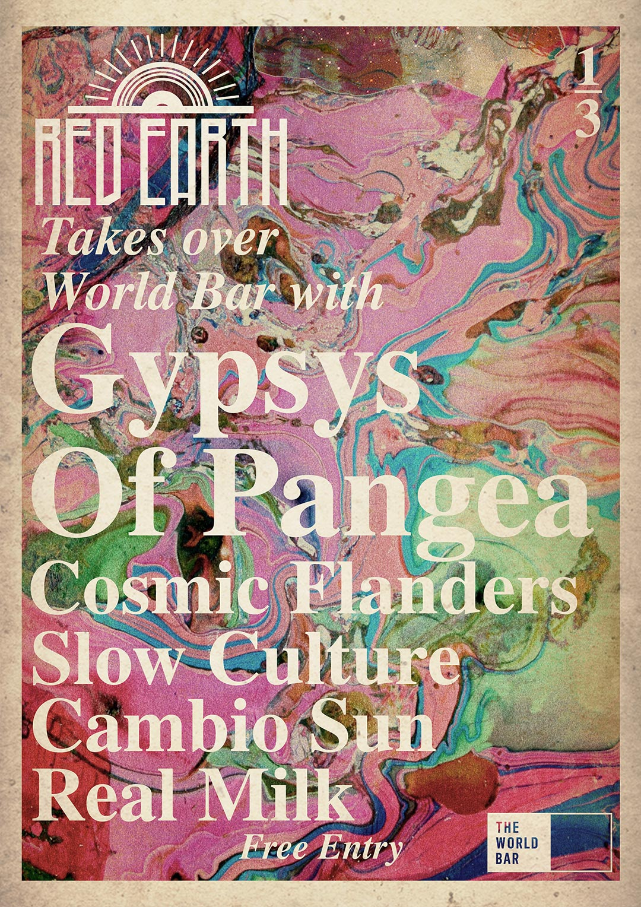
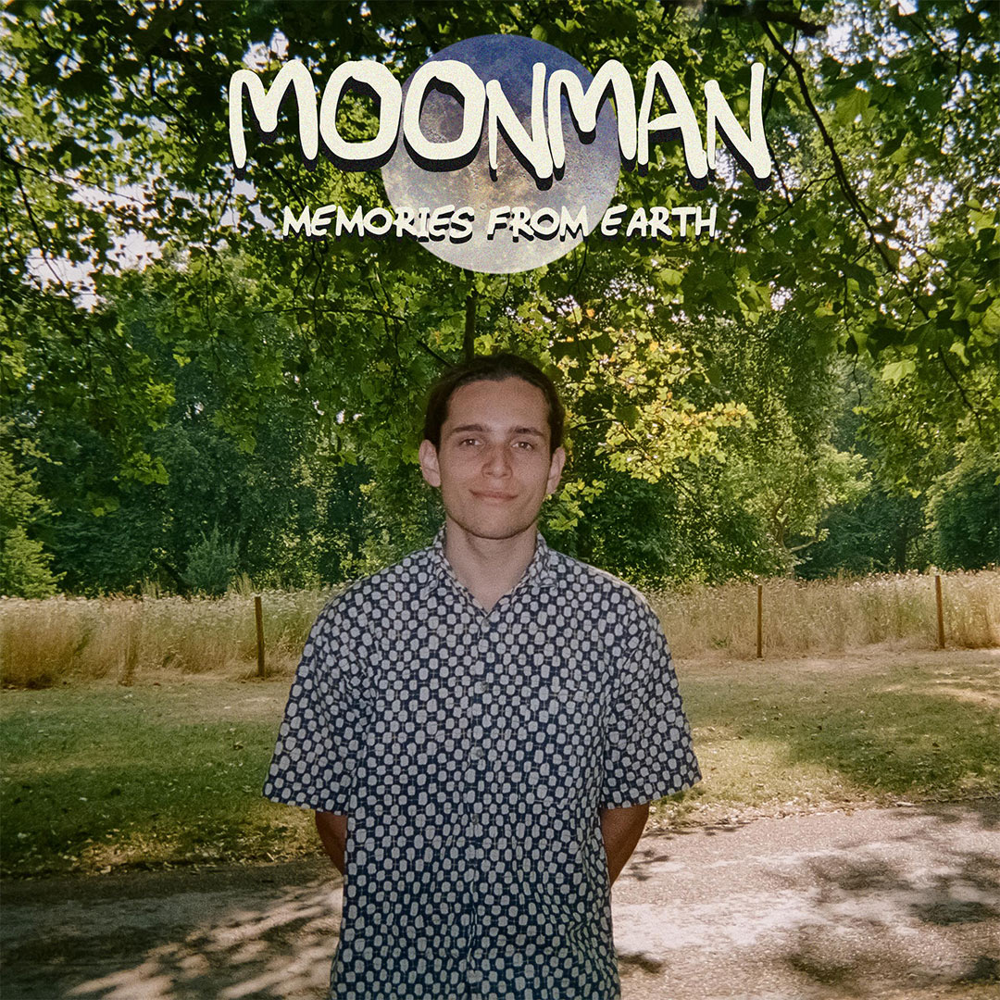

Toggle navigation
Home
Graphic
User Interface
UX: Waterbug
CV
Contact
Graphic Designs

Red Earth 'Psych Sunday'
This poster was designed to promote a joint event between Red Earth and The World Bar as part of a 3 month residency spanning 3 events
Red Earth x World Bar
This poster was designed for the second installment of the joint Red Earth/World Bar venutre, however the residency was cut short due to scheduling conflicts, hence no 3rd poster
Red Earth: QVB Gargyole launch
This year Red Earth launched the single
QVB Gargoyle
for Sydney comedy band
Pyjama Sundayz
. The artwork is intended to be a tounge and cheek take at the horror genre as the song was a tongue and cheek take on the metal genre
Red Earth x King St Crawl 2017
As a huge fan of the King Str Crawl festival it was a real honor to design this poster and help curate this event at the Corridor in Newtown
Red Earth 1
This poster commemorates our first ever Red Earth event held at the Gaelic club, it was essentially a festival spanning over 12 hours long and 14 acts
Red Earth Halloween
A spiritual sequel to the above QVB Gargoyle poster, this poster was designed to immitate a corny 80s pulp horror movie poster
Red Earth Monthly - September
Okay I got pretty literal with this one, sue me
Red Earth x King St Crawl 2018
As you can no doubt tell for this poster I opted for something quite different as I felt like I was being boxed in by a specific style. It was designed to be a love letter to Saul Bass, legendary graphic designer and creator of iconic posters for works such as The Godfather, West Side Story and Rocky
Red Earth x Union
This lineup features some really dreamy artists so I tried to make a really dreamy poster
Bread Club - T-Rex
This single art was designed for
Bread Club
a Sydney based pop-funk outfit. I opted for a 50s serial inspired artwork
Bread Club - Convoluted
Had a lot of fun with this one, quite a sylistic departure from the other graphics I've done with the band but I felt it did a good job of incorporating the song title in the art style
The Friendly Friends
This artwork was done for
The Friendly Friends
, a 60s themed rock'n'roll band that I happen to be in (that's me on the left)
Casios Clay EP
Art for my recording project I do with my childhood friend. We're now called
Club Casios
but our debut EP remains titled Casios Clay
Casios Clay MK Ultra
Currently unreleased single art
Lameboy Advance EP
Our first foray into this recording project was marked by a heavily Vaporwave inspired tracklist, hence the heavily Vaporwave inspired album art

Moon Man - Memories From Earth
Currently unreleased, here's a sneakpeak at the album art for my debut solo ep. That photo look familiar?
Casios Clay - Chemical Trails
The song is a heavily satirical take on the Chemical Trails conspiracy so I felt a satirical album art was appropriate
Poolroom - Youth
The photo here was taken by me and the album art was developed be nostalgic like art behind the music. I know it looks like Kendrick Lamar's
DAMN
album but this came first so if anyone's suing for royalties it's me!
The Astrals - 23
Oh look it's me again, this album art was designed for our debut single
23
Poolroom
This was designed as single art and promotional material for
Poolroom
Casios Clay - Destiny
Unreleased single art
Red Earth Logo
I came up with about 25 logos for Red Earth, this was the first one and everyone loved it. The vynil record doubles as a sun rising on the Red Earth. The name Red Earth and the sun rising is paying respect to the flag of the traditional custodians of this land
Dog Trax
This logo was designed for a boutique dog health startup that has been featured on TV and featured celebrity endorsements
Red Earth Records
A spin off brand from the parent brand Red Earth seen left
Club Casios
My co-producer and I decided it was time for a rename and rebrand. This new logo pays a more subtle tribute to our 80s influences while still retaining a contemporary aesthetic
The Astrals
I was going for something iconic here, the kind of logo you'd see on a band that's already made it and holds a legendary status. Hopefully the logo achieves this and hopefully we as a band one day achieve it too
Club Casios
My co-producer and I decided it was time for a rename and rebrand. This new logo pays a more subtle tribute to our 80s influences while still retaining a contemporary aesthetic